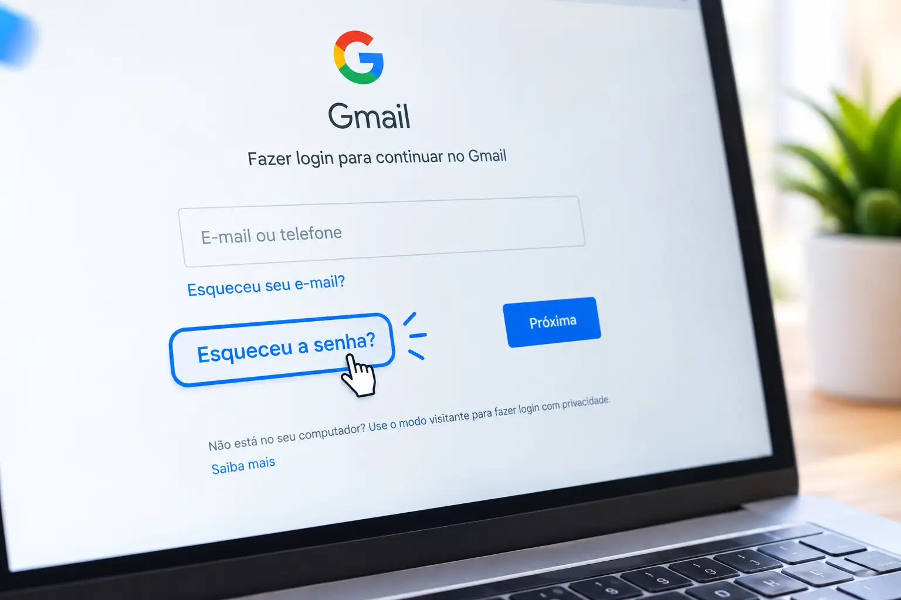
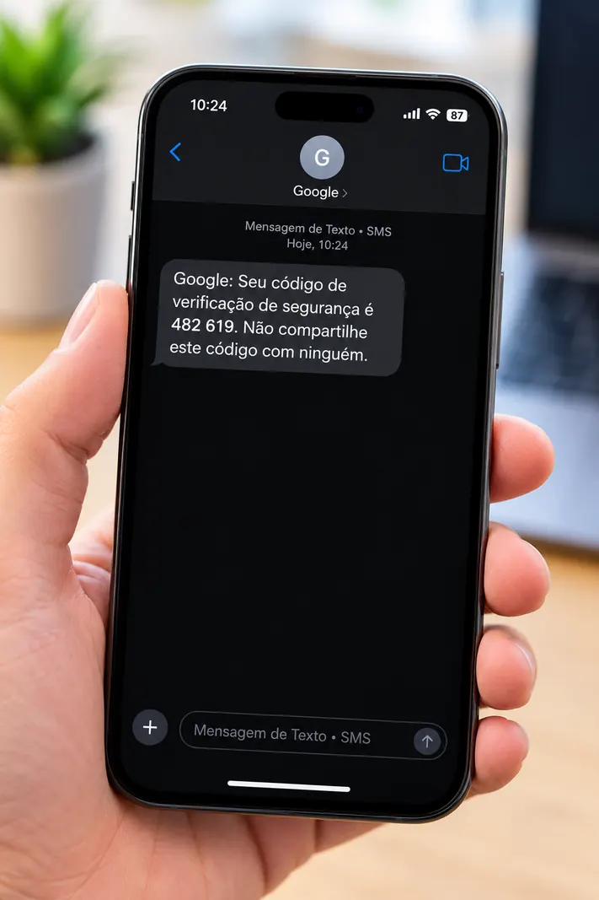

O Segredo Principal: Você não perdeu tudo!
É muito comum os alunos chegarem apavorados achando que, por esquecerem a senha, perderam todas as fotos, contatos e documentos que estavam salvos no celular. Isso não é verdade! Suas coisas continuam lá, seguras. O Google só trancou a porta temporariamente. Para abrir, você só precisa provar que você é, de fato, o dono da conta.
Passo a Passo: Como criar uma nova senha
Para provar que a conta é sua, o Google geralmente envia um código (uma mensagem de texto) para o número de celular que você cadastrou quando comprou o aparelho. É como se fosse a chave reserva de casa.
1. Acesse a tela de login do Gmail
No seu computador ou celular, abra a internet e digite gmail.com. Você verá uma tela pedindo o seu e-mail. Digite o seu endereço de e-mail completo (exemplo: seunome@gmail.com) e clique em "Avançar".
2. O Clique Salvadador: "Esqueceu a senha?"
Na tela seguinte, o Google vai pedir para você digitar a sua senha. Como você não lembra, não adianta tentar "chutar" várias vezes para não bloquear a conta. Procure na tela um link escrito em azul: Esqueceu a senha? (ou "Forgot password", se estiver em inglês) e dê um clique nele.

3. O Envio do Código de Segurança (SMS)
O Google vai tentar entrar em contato com você para verificar sua identidade. A forma mais comum é enviando um código (uma senha temporária) por mensagem de texto (SMS) para o seu celular. A tela vai mostrar os últimos dois dígitos do seu telefone para você confirmar.
Clique em Enviar e fique de olho na tela do seu celular. Você receberá uma mensagem escrita parecida com "G-123456 é o seu código de verificação do Google".

4. Digite o Código e Crie uma Nova Senha
Volte para a tela onde você estava recuperando a senha e digite os números que você recebeu no celular (não precisa digitar a letra G). Aperte "Avançar".
Vitória! O Google agora deixará você criar uma senha novinha em folha. Crie uma senha que misture letras maiúsculas, letras minúsculas e números (ex: Flores2026). Você precisará digitar a nova senha duas vezes para confirmar.
E se eu não tiver mais o meu número de telefone?
Se o Google mostrar um número de telefone que você não usa mais, procure na tela a opção "Tentar de outro jeito". O Google tentará verificar sua identidade mandando um e-mail para um contato de recuperação (como o e-mail de um filho ou neto que você cadastrou no passado) ou fazendo perguntas sobre a sua conta.
Checklist da Prevenção
Para você nunca mais passar por esse sufoco, faça este pequeno teste de mesa:
- Anotei minha nova senha em um caderninho físico que fica guardado em casa.
- O número de celular cadastrado na minha conta Google está atualizado (é o que eu uso hoje).
- Eu entendi que minha senha do Google é a "chave-mestra" do meu celular Android.
- Sei que se esquecer novamente, basta clicar em "Esqueceu a senha?" sem medo.
Seu Próximo Desafio
Com sua conta recuperada e o computador organizado em pastas, você está avançando a passos largos. Seu computador está começando a ficar cheio? Nosso próximo guia ensinará Como limpar o computador para deixá-lo mais rápido (sem apagar coisas importantes)!